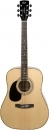

Cort AD880 LH Nat
Rasowy instrument akustyczny, o czystym metalicznym
brzmieniu oraz świetnych warunkach manualnych.
Dzięki płycie wierzchnej z świerku,
gitara wybrzmiewa wyraźnie i głośno,
szczególnie w górnych częstotliwościach.
Wersja przeznaczona dla gitarzystów leworęcznych
Płyta wierzchnia: Świerk
Boki i tył: Mahoń
Gryf: Mahoń
Podstrunnica: Palisander
Liczba progów: 20
Menzura: 25.25" (641mm)
Klucze: Odlew chromowy
Kolor: Natural połysk
Wersja leworęczna